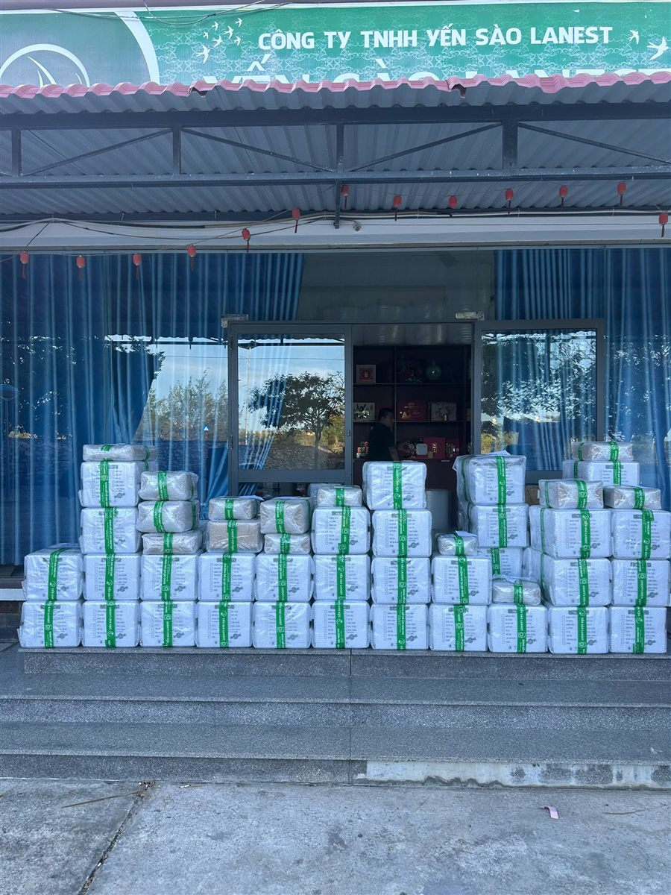
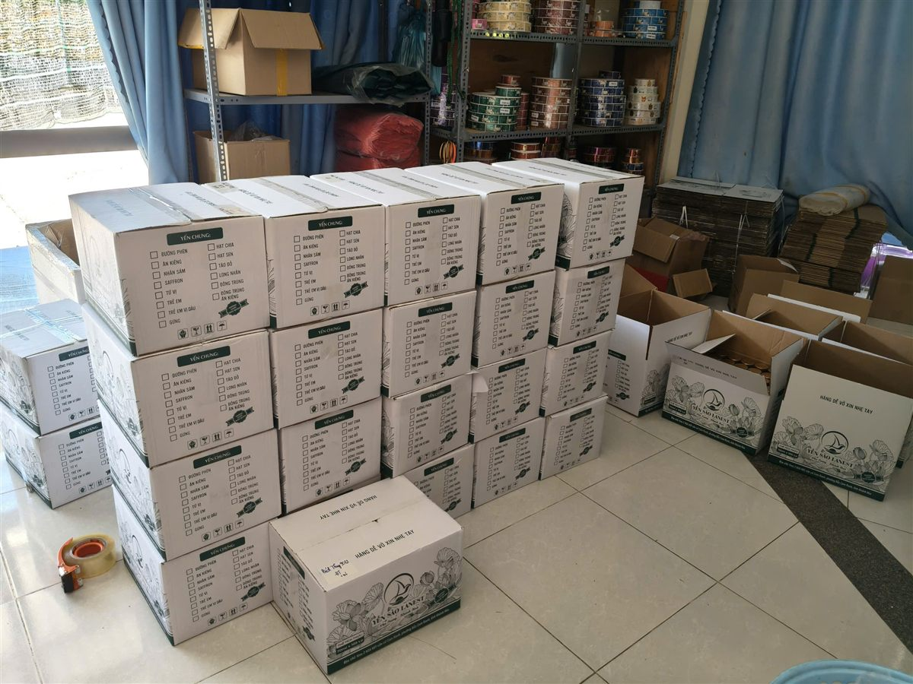

Nhập Sỉ Yến Sào: Kinh Nghiệm Chọn Nguồn Hàng Uy Tín
Yến Sào Lanest · Đăng ngày 15/10/2026

Người bán lẻ chọn sai một hộp yến thì mất một khách. Người nhập sỉ yến sào chọn sai nguồn hàng thì có thể mất cả hệ thống khách mình gây dựng nhiều năm. Bài này không bàn chuyện giá rẻ hay đắt, mà đi qua những điều một người làm nghề yến ở Khánh Hòa nhìn vào khi đánh giá một nguồn hàng có đáng gắn bó lâu dài hay không.
Thùng hàng xếp trước văn phòng Công ty TNHH Yến Sào Lanest, chờ giao đi các đại lý
1. Nguồn hàng đóng cửa là người bán lại chịu thiệt đầu tiên
Mấy năm gần đây, nhiều nhãn yến ở Khánh Hòa lần lượt ngưng hoạt động. Người sáng lập Lanest gọi đúng tên ba nguyên nhân chị thấy tận mắt:
"hồi trước có rất nhiều nhãn hàng ở đây nhưng người ta làm sản phẩm yến cho không đạt nên người ta ngưng hoặc người ta không xuất hóa đơn đầy đủ, sợ kiểm tra ngược lại nên ngưng, hoặc cắt máu quá sát không đủ khả năng duy trì. Mình vận hành phải có đầy đủ chi phí á."
Khi nguồn hàng dừng, người bán lại là người phải đi giải thích với khách của mình. Theo lời chị:
"Nên đại lý bên dưới của họ cảm thấy mất lòng tin... Người ta không có chỗ bám vô tại thương hiệu cứ đóng cửa hoài."
Vì vậy câu hỏi đầu tiên khi nhập hàng không phải "giá bao nhiêu", mà là "nguồn này có còn đứng đó vài năm nữa không".
2. Giấy tờ: xin xem trước, đừng đợi khách hỏi mới đi tìm
Ngoài thị trường vẫn có loại hàng mà dân trong nghề gọi là "tem chung": hàng trôi nổi, không giấy tờ, không mã vạch, không đủ điều kiện lưu hành. Bán loại này, người bán lại tự gánh rủi ro khi có người hỏi nguồn gốc. Trước khi nhập, anh chị nên xin xem bản tự công bố, phiếu kiểm nghiệm, mã vạch và chứng nhận an toàn thực phẩm còn hiệu lực. Với Lanest, đây là những giấy tờ đang có và gửi được cho đối tác khi cần:
| ISO 22000:2018 | Hệ thống quản lý an toàn thực phẩm, hiệu lực đến 23/09/2027 |
| Tự công bố sản phẩm | Nhiều sản phẩm, trong đó có các vị yến hũ và Yến Sào Tinh Chế Lanest, đã có bản tự công bố kèm phiếu kiểm nghiệm đạt QCVN 6-2:2010/BYT |
| Mã vạch GS1 | Đăng ký với GS1 Việt Nam, xác thực hiệu lực đến 31/12/2027 |
| Giải thưởng | Thương hiệu số 1 Việt Nam 2024 (Vietnam No.1 Brand Awards) |
3. Kiểm nghiệm một lần hay kiểm nghiệm đều đặn?
Một tờ kiểm nghiệm chứng minh được mẫu gửi đi hôm ấy đạt, chưa chứng minh được lô hàng anh chị nhận hôm nay. Nên hỏi thêm: bao lâu thì gửi mẫu một lần?
Mẫu Yến Sào Tinh Chế Lanest kiểm tại AVATEK cho kết quả đạm 62,7%, không phát hiện Salmonella, không phát hiện kim loại nặng. Nhưng điều người sáng lập Lanest xem là lý do Lanest trụ lại được qua đợt thanh lọc lại nằm ở chỗ khác:
"Nhiều bên đóng cửa nhưng bên chị vẫn duy trì được vì hàng tháng đều tự gửi mẫu đi kiểm nghiệm thật."
4. Đủ cân, đúng hàng: tự kiểm, đừng chỉ tin lời
Người sáng lập Lanest cũng từng là người nhập hàng. Hồi còn lấy yến tinh chế qua tay một đối tác, chị đem 100g về ngâm ra rồi sấy khô lại để cân thử:
"khi mà mình ngâm ra mình sấy lại thì nó chỉ còn có 84 g thôi. Tức là người ta làm ăn gian dối với mình á"
Thiếu 16g trên mỗi 100g, nhân lên số lượng nhập sỉ là một khoản rất lớn. Lần đó là lý do Lanest có đội thợ riêng từ năm 2023, và mỗi mẻ yến tinh chế đi qua 4 chốt kiểm: thợ nhặt, thợ đảo lại, thợ đắp, nhân viên kiểm tra cuối rồi mới đóng hộp. Kèm theo là ba điều không làm: không tẩy trắng, không độn tăng trọng lượng, không "chữa" hàng không đạt. Chi tiết có trong bài bên trong xưởng yến Lanest.
Lô đầu tiên, anh chị cứ làm như người sáng lập Lanest từng làm: cân lại, ngâm thử, so sợi. Cách nhìn sợi yến thật giả có trong bài phân biệt yến sào thật giả.

Thùng yến chưng tại kho Lanest, ngoài thùng có ô đánh dấu từng vị để đối chiếu khi giao nhận
5. Hóa đơn và giá niêm yết: bảo vệ chính người bán lại
Với người nhập sỉ, hóa đơn là bằng chứng nguồn gốc hàng mình đang bán. Từ khi lên công ty cuối năm 2023, Lanest xuất hóa đơn đầy đủ; giá đã gồm VAT 8%, cần hóa đơn VAT công ty thì gửi thông tin ngay lúc đặt hàng. Người sáng lập Lanest nói về quyết định này:
"rất là nhiều doanh nghiệp vẫn còn đang không có xuất phát hóa đơn á thì bên mình tâm niệm là bên mình sẽ làm đúng nhất có thể."
Điều thứ hai nên hỏi là nguồn hàng có giữ giá cho hệ thống không. Nếu ai cũng được phá giá, người bán chăm khách tử tế sẽ là người thua. Chính sách bán hàng của Lanest, đăng công khai trên website, yêu cầu mọi cộng tác viên, đại lý, nhà phân phối bán đúng giá niêm yết, cấm phá giá dưới mọi hình thức và cấm lôi kéo khách của nhau. Về phía công ty, người sáng lập Lanest giữ một nguyên tắc với dữ liệu khách của đại lý:
"mình làm việc rất là uy tín mình không bao giờ đụng tới data khách hàng của đại lý ở bên dưới"
6. Muốn bán dưới nhãn riêng thì hỏi gì?
Một số đơn vị nhập sỉ muốn xây thương hiệu của mình. Lanest có nhận đóng hàng không tem để đối tác dán nhãn riêng. Trường hợp này, anh chị nên trao đổi rõ từ đầu: sản phẩm mang nhãn mới thì hồ sơ công bố và mã vạch cho nhãn đó do ai lo, để hàng của mình không rơi vào cảnh "tem chung" kể trên.
Bảng kiểm nhanh trước khi chọn nguồn nhập sỉ yến sào
- Có bản tự công bố, phiếu kiểm nghiệm, mã vạch, chứng nhận còn hiệu lực không?
- Bao lâu gửi mẫu kiểm nghiệm một lần?
- Lô đầu cân lại, ngâm thử có đủ cân, sợi có dai không?
- Có xuất hóa đơn đầy đủ không?
- Có chính sách giữ giá, chống phá giá thành văn không?
- Hàng lỗi do vận chuyển hoặc do nhà sản xuất thì đổi trả thế nào? (Lanest: báo trong 15 ngày kể từ ngày nhận, kèm hình ảnh hoặc video lúc mở hàng.)
Câu hỏi thường gặp
Nhập sỉ yến sào có nên chọn nơi giá thấp nhất không?
Giá chỉ là một phần. Theo kinh nghiệm của người sáng lập Lanest, nhiều nhãn yến ngưng hoạt động chính vì bán giá quá sát, không đủ chi phí duy trì, và người bán lại mất chỗ dựa.
Tôi có thể xin xem giấy kiểm nghiệm trước khi nhập hàng Lanest không?
Được. Anh chị gọi 0258 6278 627 hoặc nhắn fanpage Yến Sào Lanest để được gửi chứng nhận, bản tự công bố và kết quả kiểm nghiệm.
Lanest có xuất hóa đơn VAT cho đơn sỉ không?
Có. Giá đã gồm VAT 8%. Cần hóa đơn VAT công ty, anh chị cung cấp thông tin ngay khi đặt hàng.